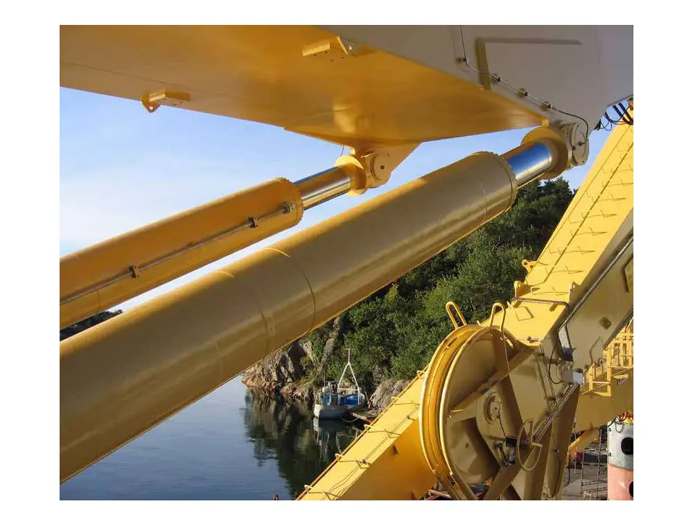

Engineering knowledge, translated into dependable products.
The supplied company literature describes manufacturing experience across hydraulics, precision machinery parts, custom machinery, rubber moulding presses and high-performance silicone products.
Projects range from one-off custom components to complete hydraulic systems, supporting steel, mining, cement, offshore, marine, energy, construction, pharma, automobile and general industry.

No job too small, large or complicated.
Inspection is built into the process.
A disciplined path from incoming material to final performance testing supports consistent delivery.
Material Control
Raw materials, subcontracted items and bought-out components are subjected to inspection.
In-Process Inspection
Critical components are checked through manufacturing to maintain dimensional and functional control.
Final Testing
Finished products undergo static and dynamic testing on customised rigs before dispatch.
Every step on the way.
Dedication, innovation, technical upgradation, business ethics and value for money shape the way M&M works with customers, suppliers and teams.
Start a project →